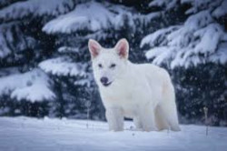
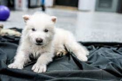
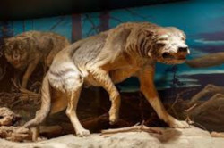
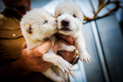

Lobo-Terrível
Lobos terriveis voltam da extinção ?
A empresa americana Colossal Biosciences anunciou na segunda-feira (07/04) os supostos "primeiros animais deextintos do mundo".
Num vídeo postado no X (o antigo Twitter), eles mostram os uivos de dois filhotes que supostamente são de lobo-terrível (Aenocyon dirus), uma espécie de pelagem branca que habitou as Américas, mas está extinta há mais de 10 mil anos.
"Esse momento representa não apenas um marco para nós como empresa, mas um avanço para a ciência, a conservação e a humanidade", comemorou a Colossal Biosciences nas redes sociais.
Qual era o tamanho do lobo-terrível ?
O lobo terrível tinha aproximadamente o mesmo tamanho das maiores formas modernas de lobo-cinzento (Canis lupus), como o lobo de Yukon e o lobo do noroeste. O A. d. guildayi pesava em média 60 kg, e o A. d. dirus, cerca de 68 kg.

Como recriaram o lobo-terrível ?
Para tentar recriar o animal pré-histórico, os cientistas utilizaram técnicas de edição genética que exigem atenção. A partir de dois fósseis do lobo-terrível — um dente e um osso do ouvido interno de um crânio —, os cientistas sequenciaram o DNA antigo para ter uma ideia de como era o material genético dessa espécie.

Quando o lobo-terrível foi extinto ?
O último ancestral comum entre eles viveu 5,7 milhões de anos atrás. O Lobo-Terrível evoluiu e se extinguiu de forma isolada, os últimos exemplares tendo vivido entre 10 e 13 mil anos atrás.

É possivel domar um lobo ?
Basicamente, os lobos são animais selvagens, mais independentes, difíceis de controlar, e os cuidados de saúde que eles precisam são impossíveis de fornecer em uma casa humana, assim, lobos mansos que são tratados como animais de estimação são um perigo real para o seu ambiente e para eles mesmos”.
